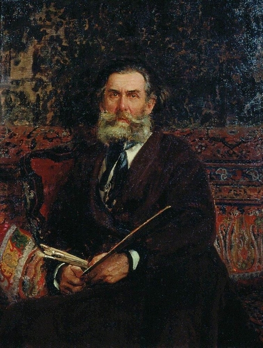

Живописец, пейзажист, маринист, автор картин на сюжеты из истории русского флота.
Воспитанник Морского кадетского корпуса и морской офицер в 1850 году поступил в Академию художеств,
которую окончил в 1853 году с большой золотой медалью. Во время пенсионерской поездки в Европу
совершенствовал свое мастерство во Франции и Германии. В 1860 году возвратился в Петербург,
где за выполненные картины ему присвоено звание профессора. Совершил путешествия по Швейцарии и Италии,
Турции, Франции, Германии и Голландии, Италии, России (Волга, Баку, Крым, Подмосковье, Крым, Украина).
Создал Общество взаимного вспоможения и благотворительности русских художников во Франции.
Среди опекаемых им российских пенсионеров были И. Репин, В. Поленов, К. Савицкий, В. Верещагин и др.
Постоянный член правления Товарищества передвижных художественных выставок. Основатель первого в России
провинциального художественного музея в Саратове - ныне Государственного художественного музея имени А.Н. Радищева
(Радищев был дедом Боголюбова по материнской линии). Завещал свое состояние музею и открывшейся при нем рисовальной школе.